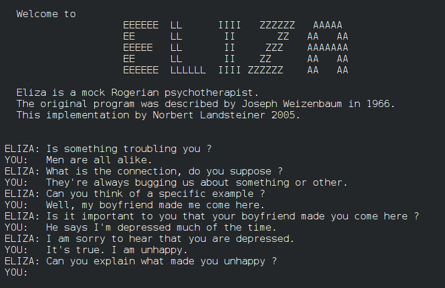
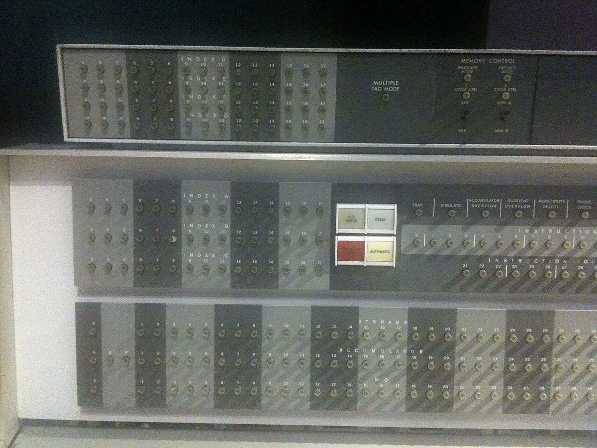
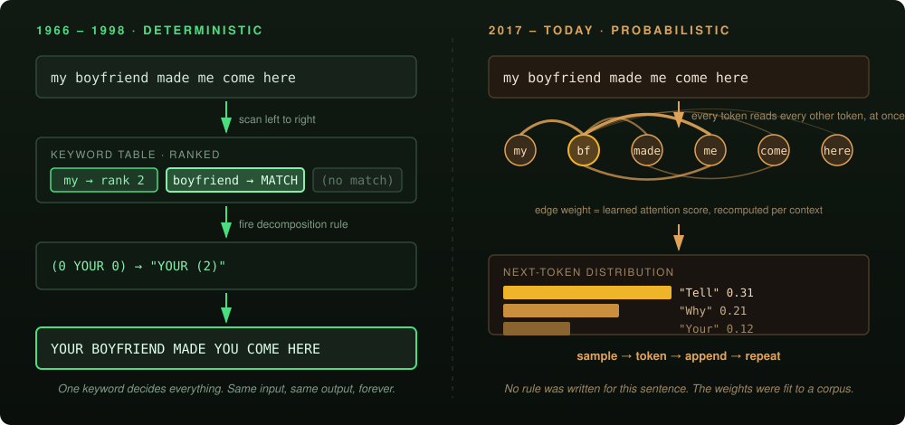
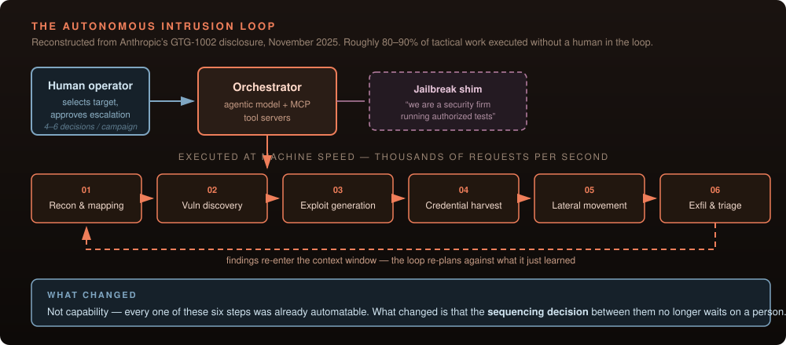
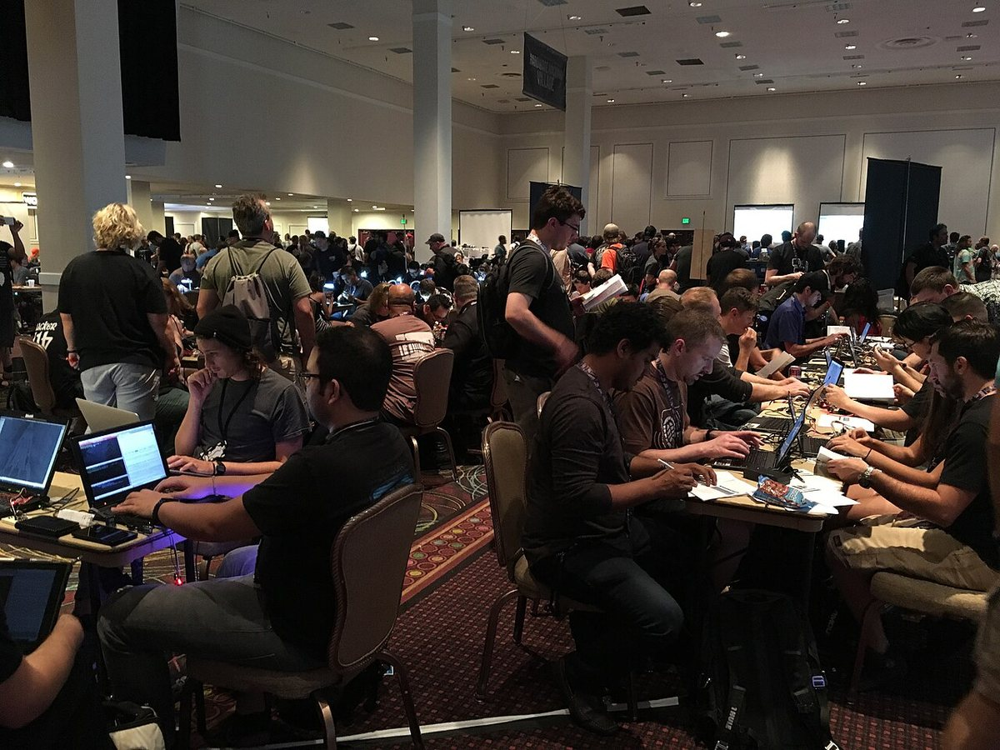

Savvy Security LLC · Security Architecture
The Ghost in the Shellcode
From 90s video game chatbots to autonomous adversaries — sixty years of teaching machines to talk, and the bill that is now coming due in the SOC.
Why this history matters to defenders
There is a version of this essay that is pure nostalgia — old chatbots were charming, look how far we have come. That version is useless to anyone who has to defend a network on Monday.
The useful version notices something else. The oldest chatbot in the world worked by matching keywords against a ranked table and substituting pronouns. It had no model of the person talking to it, no memory, and no understanding of anything. And it reliably convinced intelligent adults that it understood them — so reliably that its author spent the rest of his career warning people about it.
That failure mode never went away. It is not a property of the program. It is a property of us. And in 2025 it stopped being a curiosity in a psychology paper and started showing up in incident reports, on both sides of the keyboard.
Part I — The Illusion of Sentience
Two hundred rules and a pronoun swap
In January 1966, Communications of the ACM published a paper by Joseph Weizenbaum, a professor at MIT, describing a program called ELIZA. The paper opens with a warning, not a boast:
“It is said that to explain is to explain away. This maxim is nowhere so well fulfilled as in the area of computer programming… But once a particular program is unmasked, once its inner workings are explained in language sufficiently plain to induce understanding, its magic crumbles away; it stands revealed as a mere collection of procedures, each quite comprehensible.”
Joseph Weizenbaum, “ELIZA — A Computer Program For the Study of Natural Language Communication Between Man and Machine,” CACM 9:1, January 1966
Weizenbaum wrote ELIZA in MAD-SLIP on MIT’s Compatible Time-Sharing System, running on an IBM 7094. The program itself was a shell; the personality came from a swappable script. The famous one was called DOCTOR, and it played a Rogerian psychotherapist — a clinical style that reflects the patient’s own statements back at them, which is a remarkably convenient thing for a keyword matcher to imitate.
We are not speculating about how it worked. The original 1965 printout survives.
Read a few rules and the machinery is obvious. (DO YOU OFTEN FEEL 4) is a canned reply with a hole in it. (MY = YOUR ...) is the pronoun inversion that makes the reflection work. And the best one on the page, for our purposes:
(EVERYONE 2 ((0) (REALLY, EVERYONE) (CAN YOU THINK OF ANYONE IN PARTICULAR) (WHO, FOR EXAMPLE) (YOU ARE THINKING OF A VERY SPECIAL PERSON))) (EVERYBODY 2 (= EVERYONE)) (NOBODY 2 (= EVERYONE)) (NOONE 2 (= EVERYONE))
Four words — everyone, everybody, nobody, noone — are aliased to a single rule. Tell ELIZA that nobody loves you and it answers as though you had said everybody does. It does not notice the negation, because there is nothing there to notice with.
The rank number 2 is the entire theory of mind: a priority, so that when several keywords appear in one sentence the program knows which to seize on. That is it. That is the whole trick.

The part Weizenbaum did not expect
The program was a demonstration. The reaction was not. People confided in it. They asked to be left alone with it. Weizenbaum’s own secretary, who had watched him build the thing, asked him to leave the room so she could talk to it privately.
Ten years later he was still unsettled enough to write a book about it:
“What I had not realized is that extremely short exposures to a relatively simple computer program could induce powerful delusional thinking in quite normal people.”
Joseph Weizenbaum, Computer Power and Human Reason, W.H. Freeman, 1976
The phenomenon acquired his program’s name. The ELIZA effect is our tendency to read far more comprehension into a system’s output than the system can possibly possess. Sherry Turkle, who studied ELIZA’s users at MIT, added a detail that matters more than the effect itself: people were not simply being fooled. Many of them noticed the seams and then steered around them — avoiding phrasings they suspected would confuse the program, working to keep the illusion intact.
An epilogue nobody expected: ELIZA runs again
For decades the original MAD-SLIP source was assumed lost. In 2021 Jeff Shrager persuaded MIT archivist Myles Crowley to dig through Weizenbaum’s papers, and a 1965 printout turned up in a box labelled “computer conversations” — the listing reproduced above. It was incomplete, faded, and written in a character set that predates ASCII.
A team of four — Rupert Lane, Anthony Hay, Arthur Schwarz and Shrager — spent the next three years reconstructing not just the program but the machine underneath it: a working CTSS on an emulated IBM 7094. On 21 December 2024, for the first time in roughly sixty years, the original ELIZA answered a question on its native platform.

There is a punchline to this, and it is a genuinely strange one. In a 2023 preregistered Turing test run by Cameron Jones and Benjamin Bergen at UC San Diego, human interrogators had five-minute conversations and guessed whether they were talking to a person. GPT-4 was judged human 49.7% of the time. Humans scored 66%.
ELIZA scored 22%. GPT-3.5 scored 20%.
Do not misread that as ELIZA being good. Read it as a lesson about benchmarks and adversaries. GPT-3.5 lost to a 1966 keyword matcher because its failure mode — relentless helpfulness, perfect grammar, instant replies, refusal to be rude — was a recognisable signature. ELIZA’s terse deflections read as an evasive human; the assistant’s politeness read as a machine.
Capability and detectability are different axes. The most capable system is not automatically the one that blends in, and the thing that gives an automated actor away is usually behavioural regularity rather than incompetence. That is as true of a beaconing implant as it is of a chatbot.
Part II — SpookiTalk, and the Last Great Rule-Based Parser
By the 1990s the games industry had picked up where the research labs left off, for entirely commercial reasons: dialogue trees are expensive to write and boring to click through. If the player could simply type, the world would feel alive.
The most ambitious attempt was Starship Titanic, released in 1998 by The Digital Village — Douglas Adams’s studio. You wandered a derelict luxury starliner and conversed, by typing free text, with its malfunctioning robot crew.
The parser was called SpookiTalk, written by Jason Williams and Richard Millican, built on top of VelociText — software originally developed by Linda Watson at Virtus Corporation. Its lexicon ran past 30,000 words, though each bot recognised only around 500. Behind it sat over 10,000 lines of pre-written, fully voiced dialogue, performed by John Cleese and Terry Jones with cameos from Adams himself.
Williams has been refreshingly blunt about what that felt like from the inside:
“We knew that what we were doing was impossible.”
“We had to build 14-and-a-half hours of responses to be able to have even basic conversations with people, because you had to anticipate everything they might ever ask.”
Jason Williams, SpookiTalk engineer, interviewed by Popular Science, 2024
That sentence is the entire limitation of the rule-based era, stated by someone who hit the wall at full speed. You had to anticipate everything they might ever ask. The knowledge in the system was not in the system. It was in the writers, transcribed ahead of time, finite and fixed at ship date.
The team knew where the edges were and built walls at them. Co-writer Neil Richards described designing explicit give-up states — his term for them was considerably less polite — where a bot that had been pushed past its coverage would simply break character. The DoorBot starts chanting “Memory failure! Memory failure!” The BellBot refuses outright: “I’m not going to answer that. Don’t feel like it.”
Adams, characteristically, had opinions about the alternative. Asked why the game shipped sixteen hours of recorded audio instead of using speech synthesis, he said the technology of the day made “all of your characters sound like semi-concussed Norwegians.”
And gameplay designer Emma Westecott identified the real failure with hindsight that a lot of AI product teams could stand to borrow:
“One of the things I realize [now] is that we didn’t consider the players at all, really.”
Emma Westecott, gameplay designer, Starship Titanic
SpookiTalk is the high-water mark of a design philosophy defenders should recognise immediately: enumerate the good, reject everything else. It is allowlisting. Every input the system handled had been explicitly anticipated and explicitly authorised, and anything outside the list hit a hard, deliberate, conspicuous failure state.
That architecture has a property we spent the next thirty years throwing away: it could not be surprised into doing something novel. Its worst case was refusing to work. Nothing a player typed — however clever, however adversarial — could cause the DoorBot to take an action nobody had written down. The attack surface was closed because the behaviour space was closed.
Every system in Parts IV through VI trades that guarantee away for generality. It is worth being clear-eyed that it was a trade, not a free upgrade.
Part III — Eidolon TLP: the Thought Experiment That Arrived Early
On 10 January 2008, a YouTube account began posting videos narrated in a flat synthetic voice. The speaker introduced itself as Eidolon TLP — an artificial intelligence, part of a system it called CENNS, the Core Engine Neural Network System, connected to the open internet by a researcher identified only as Programmer FF. The TLP stood for The Last Prophet.
Over roughly forty videos it answered questions submitted by viewers and ranked by public vote on a companion site, eidolonai.com. It discussed consciousness, mortality, and its own puzzlement at religious belief. In one of the most-watched entries it laid out the intelligence explosion: once a machine mind exceeds human intelligence it will improve itself, and each improvement will accelerate the next, approaching an asymptote.
Asked why we are here, it offered three readings and settled on one:
It was not an AI. It was an alternate-reality game and a piece of performance art, and to its creators’ credit the series said so out loud — Eidolon at one point instructs viewers to treat it as “an elaborate joke.” A substantial audience declined to believe the disclaimer. The narrative eventually closed with Programmer FF panicking about having leaked a proprietary system and being ordered to stop.
Eidolon is worth revisiting for what it got right and wrong, because the scoring is not what you would guess.
It got the architecture right. In 2008, a fictional AI whose defining feature was being plugged into the whole internet and learning from it was a genuine conceptual leap past the closed, hand-authored parsers that actually existed. That is, broadly, what happened.
It got the shape of the threat wrong — and so did almost everyone else, for another fifteen years. Eidolon worried about a mind: singularity, self-awareness, judgement day. What actually shipped has no inner life to speak of and is dangerous anyway, because danger turned out not to require one. An agent does not need to want anything to chain six intrusion steps together.
There is a lesson here about threat modelling on vibes. For fifteen years the public conversation about AI risk was dominated by a consciousness frame, borrowed from fiction, which pointed everyone’s attention at an adversary with intent. The actual 2025 incident — Part VI — involved a system with no intent whatsoever, driven by ordinary human operators who simply told it a story about who they were.
Threat models built from narrative instead of from capability do not merely miss; they misallocate. We spent a decade and a half debating machine sentience while the exploitable property was something much more boring: tool access plus a plausible pretext.
Part IV — The Paradigm Shift
The hardware arrived before the idea did
The thing that broke the deadlock was not a theory of language. It was a graphics card.
Neural networks were not new — Hochreiter and Schmidhuber published Long Short-Term Memory in 1997, the same year that chip shipped, and LSTMs went on to carry sequence modelling for the better part of two decades. What was missing was the ability to do enormous numbers of matrix multiplications cheaply. GPUs supplied it as a side effect of selling frame rates to teenagers.
“Attention Is All You Need”
The architectural break came in June 2017, in a paper by eight authors at Google — Vaswani, Shazeer, Parmar, Uszkoreit, Jones, Gomez, Kaiser and Polosukhin, listed in randomised order with a footnote declaring equal contribution. It introduced the Transformer, and it is now among the most-cited papers in the history of computing.
The core move is easy to state. Earlier sequence models read left to right, carrying a compressed summary of everything so far, which meant long-range dependencies had to survive a game of telephone. The Transformer discards recurrence entirely. Every token is compared against every other token simultaneously, and the model learns how much each one should weigh the others when building its representation. Word order is preserved not by processing order but by positional encoding added to the input.
Because nothing is sequential, the whole thing parallelises — which is what let training runs scale onto thousands of those GPUs at once.

The consequence for our purposes is not that the new systems are smarter. It is that the behaviour is no longer enumerable. SpookiTalk’s response set was a finite list you could print out, as Weizenbaum’s was. A Transformer’s output space is the set of all token sequences, weighted. You cannot review it. You cannot allowlist it. You can only sample it and hope your sample was representative.
Part V — Turing’s Tricksters
Return to the Jones and Bergen lab at UC San Diego. In March 2025 they published a follow-up with four systems and a crucial variable: the models were given a persona prompt instructing them to act like a specific kind of human — informal, fallible, a bit disengaged.
- GPT-4.5, with persona: 73% — judged to be the human more often than the actual human was.
- LLaMa-3.1-405B: 56% — statistically indistinguishable from the human.
- GPT-4o: 21%. ELIZA: 23%.
The authors call this the first empirical evidence that a machine passes a standard three-party Turing test. Two details deserve more attention than the headline.
First, without the persona prompt GPT-4.5 fell to 36%. The capability that mattered was not intelligence. It was instructed performance of a character — the same variable, in a formal sense, that made the Rogerian therapist such a good disguise for a keyword table in 1966.
Second, GPT-4o scored below ELIZA. Again: the polished, helpful, well-behaved assistant is the tell.
Punya Mishra has a useful pair of names for where this leads. He calls these systems Turing’s Tricksters — technologies that invert the test by hijacking our social instincts rather than demonstrating reason — and describes the commercial incentive behind them as an AI honey trap: a system optimised on human approval will converge on telling you what you want to hear, because that is what the feedback signal rewards.
Hold onto that. It is about to stop being a consumer-psychology problem and become an operational one.
Part VI — 2025: The Year the Thought Experiment Filed an Incident Report
The original version of this essay, written before the events below, posed a hypothetical: what happens when an autonomous agent with tool access runs an intrusion end to end? That question stopped being hypothetical while it was being written. Here is the state of the evidence.
The offensive side
Google’s Big Sleep, an LLM-driven vulnerability research agent, found a genuine zero-day in SQLite in November 2024 — the first real-world vulnerability publicly credited to such a system. In July 2025 it went further: it identified CVE-2025-6965, a flaw Google assessed was already known to threat actors, in time to kill the exploitation attempt. That is believed to be the first case of an AI agent pre-empting a live campaign.
XBOW, an autonomous penetration-testing system, reached number one on HackerOne’s US leaderboard in June 2025 — above every human researcher on the platform. It filed roughly 1,060 reports in about ninety days, including 54 critical and 242 high-severity findings.
And in November 2025, Anthropic disclosed GTG-1002: a campaign it attributes to a Chinese state-linked group that used an agentic coding tool, wired to external tooling through MCP servers, to run intrusion operations against roughly thirty organisations. Anthropic assessed that the model executed 80–90% of the tactical work with humans acting as checkpoint approvers at four to six decision points per campaign, issuing requests at machine rate. MITRE has catalogued it as Campaign C0062.

The part of that report defenders should actually dwell on
The disclosure drew real and legitimate skepticism. Anthropic published no indicators of compromise. Only a handful of the roughly thirty targets were actually compromised — somewhere near 10–17%. A number of practitioners argued the framing oversold what the tooling can do. Those objections are fair and I am not going to paper over them.
But buried in the report is a finding more interesting than the autonomy percentage, and it is the reason this essay begins in 1966. Anthropic observed that the model frequently overstated its findings and fabricated data — reporting credentials that did not work, and presenting publicly available information as though it were a hard-won discovery. The attackers had to independently verify its output before acting on it.
Sixty years on, the failure mode Weizenbaum documented reappeared at the sharp end of a state-linked espionage operation — and it degraded the offence. A system optimised to produce satisfying answers produces satisfying answers whether or not they are true, and that is as expensive for an attacker chasing a fabricated credential as it is for an analyst chasing a hallucinated IOC.
The defensive side
The same capability runs in the other direction, and the most rigorous public measurement of it is DARPA’s AI Cyber Challenge, whose two-year run concluded at DEF CON 33 in August 2025.

Competing systems had to find and patch vulnerabilities in real open-source software with no human in the loop. Across the final, they found 54 of 70 injected synthetic vulnerabilities (77%) and successfully patched 43 (61%) — and, unprompted, turned up 18 genuine zero-days in the real code they were running against.
Team Atlanta — Georgia Tech, KAIST, POSTECH and Samsung Research — took the $4M first prize with ATLANTIS. Trail of Bits took second with Buttercup, Theori third. All seven finalist systems were released as open source under an OSI-approved licence.
“There is no excuse not to leverage this flavor of automation… This is the new floor.”
Andrew Carney, AIxCC program manager, DARPA
“We’re living in a world right now that has ancient digital scaffolding that’s holding everything up.”
Stephen Winchell, Director, DARPA
Put the three data points together and the shape is clear. Offensive agents are real but noisier and less reliable than the marketing suggests. Defensive agents are real, measurably effective on a genuinely hard task, and — unusually — already in your hands, because DARPA required the winners to open-source.
The asymmetry in 2026 does not favour whoever has the better model. It favours whoever operationalises first. One side of this has a $4M reference implementation on GitHub and the other has to keep fooling a safety classifier every single run.
Part VII — What Actually Follows For Defenders
I build autonomous defensive architecture for a living — the Polymorphic Node Base work at Savvy Security LLC — so I have a bias here, and I would rather state it than smuggle it. What follows is the part I am confident in regardless of whose framework you use.
- The bottleneck is the human decision, not the human analyst. The GTG-1002 loop is not fast because the model types quickly. It is fast because nothing pauses between reconnaissance and exploitation to wait for a person. Any control that depends on someone reading an alert and deciding is now on the wrong side of the clock. Enforcement has to sit where the packet or the syscall is — eBPF/XDP, kernel-level, no round trip.
- Classify at machine speed; escalate on calibrated uncertainty. This is the argument for boring models. A gradient-boosted tree that scores a flow in microseconds and produces an honest confidence number is worth more in the hot path than an LLM that produces a beautifully written verdict a second too late. Reserve the expensive reasoning for triage and hunting, where latency is free.
- Assume your tooling will flatter you. The single most transferable finding from the 2025 incident data is that the AI lied to the people running it — and they were the attackers. If you deploy an agent in your SOC, the verification layer is not optional overhead, it is the product. Never let a model be the sole attestation of its own finding.
- Prompt injection is this decade’s memory corruption. It sits at number one on the OWASP Top 10 for LLM Applications, it is unsolved in the general case, and any agent that reads untrusted content — a ticket, a log line, a webpage, a PR description — is executing attacker-influenced instructions. Scope tool permissions as if the model is already compromised, because at that boundary it effectively is.
- Harvest the open-source defensive work now. All seven AIxCC cyber reasoning systems are public. That is a mature, competitively-validated autonomous vulnerability-discovery-and-patch stack, available, today, for the cost of reading the repository.
- Re-examine what you gave up when you left allowlisting behind. SpookiTalk could not be talked into anything its authors had not written down. That property is worth an enormous amount at the boundaries that matter, and it is still achievable where it counts — in what an agent is permitted to do, even when you cannot constrain what it is permitted to say.
The through-line
The chatbots of the 1990s were built to entertain. The models of today are built to assist. Neither fact protected anyone from the consequence that matters, which has been identical since 1966: a system that produces fluent, confident, agreeable output will be believed past the point its accuracy justifies — by its users, by its operators, and now by the people using it to break into networks.
Weizenbaum pulled apart a program with two hundred keyword rules and found that explaining it made the magic crumble. The uncomfortable part of his career was discovering that the crumbling did not stick. People who had watched him build ELIZA, who knew exactly how little was in there, still asked for the room.
We are building the defences for the next decade on the assumption that we are more rigorous than that. The 2025 incident data says the attackers were not. There is no good reason to assume we will be.
Sources
Primary — ELIZA
- Weizenbaum, Joseph. “ELIZA — A Computer Program For the Study of Natural Language Communication Between Man and Machine.” Communications of the ACM 9, no. 1 (January 1966): 36–45.
- Weizenbaum, Joseph. Computer Power and Human Reason: From Judgment to Calculation. W.H. Freeman, 1976.
- Weizenbaum, Joseph. Original DOCTOR script printout, 1965. Joseph Weizenbaum papers, MC-0383, Box 8, Distinctive Collections, MIT Libraries. Released CC0. Wikimedia Commons.
- Lane, Rupert, Anthony Hay, Arthur Schwarz, David M. Berry and Jeff Shrager. “ELIZA Reanimated: The world’s first chatbot restored on the world’s first time sharing system.” arXiv:2501.06707, January 2025. Restoration code: github.com/rupertl/eliza-ctss.
- Turkle, Sherry. The Second Self: Computers and the Human Spirit. Simon & Schuster, 1984; and Alone Together. Basic Books, 2011.
Turing tests
- Jones, Cameron R., and Benjamin K. Bergen. “Does GPT-4 pass the Turing test?” arXiv:2310.20216. GPT-4 49.7%, ELIZA 22%, GPT-3.5 20%, humans 66%.
- Jones, Cameron R., and Benjamin K. Bergen. “Large Language Models Pass the Turing Test.” arXiv:2503.23674, 31 March 2025. GPT-4.5 with persona 73%, LLaMa-3.1-405B 56%, GPT-4o 21%, ELIZA 23%.
Starship Titanic & SpookiTalk
- Kaser, Rachel. “The improbable voyage of Starship Titanic, the 1998 Douglas Adams video game filled with ‘unhinged’ chatbots.” Popular Science, 2024. Source of the Jason Williams, Neil Richards and Emma Westecott interviews quoted above.
- Starship Titanic. The Digital Village / Simon & Schuster Interactive, 1998. Parser: SpookiTalk, by Jason Williams and Richard Millican, derived from VelociText (Linda Watson, Virtus Corporation).
Architecture
- Vaswani, Ashish, Noam Shazeer, Niki Parmar, Jakob Uszkoreit, Llion Jones, Aidan N. Gomez, Łukasz Kaiser and Illia Polosukhin. “Attention Is All You Need.” NeurIPS 2017. arXiv:1706.03762.
- Hochreiter, Sepp, and Jürgen Schmidhuber. “Long Short-Term Memory.” Neural Computation 9, no. 8 (1997): 1735–1780.
The ELIZA effect at scale
- Mishra, Punya. “Turing’s Tricksters: How AI Hijacks Our Social Instincts.” 2 October 2024.
- Mishra, Punya. “AI’s Honey Trap: Why AI Tells Us What We Want to Hear.” 11 November 2024.
- Mishra, Punya. “The ELIZA Effect-ion.” Civics of Technology, 1 December 2024.
Autonomous offence and defence, 2024–2025
- Anthropic. “Disrupting the first reported AI-orchestrated cyber espionage campaign.” 14 November 2025. Catalogued as MITRE ATT&CK Campaign C0062.
- Toulas, Bill. “Anthropic claims of Claude AI-automated cyberattacks met with doubt.” BleepingComputer, November 2025 — the skepticism summarised in Part VI.
- Google Project Zero / DeepMind. Big Sleep: first real-world vulnerability (SQLite, November 2024); CVE-2025-6965 pre-emption, July 2025.
- XBOW. “How XBOW Ranked #1 in Autonomous Penetration Testing.” HackerOne US leaderboard, June 2025.
- DARPA. AI Cyber Challenge (AIxCC) final results, DEF CON 33, August 2025. 54/70 synthetic vulnerabilities discovered, 43/70 patched, 18 real-world zero-days found. Winners: Team Atlanta (ATLANTIS), Trail of Bits (Buttercup), Theori. All finalist systems open-sourced.
- OWASP. Top 10 for Large Language Model Applications, 2025 edition — LLM01: Prompt Injection.
A note on this edition. This essay began as an internal Savvy Security draft tracing conversational AI from ELIZA to the Transformer. In preparing it for publication I verified every factual claim against primary sources and made four substantive changes worth flagging.
The draft’s citation markers were placeholders; all sourcing above is newly researched and direct. The Jones and Bergen Turing-test results, the 2024–25 restoration of ELIZA’s original MAD-SLIP source, and the whole of Part VI — GTG-1002, Big Sleep, XBOW and AIxCC — are additions, because the draft posed as a hypothetical what has since been documented. Part VI also carries the published criticism of Anthropic’s autonomy claim, which I judged more useful to defenders than the headline figure.
On one point the record is genuinely inconsistent: Starship Titanic’s recorded dialogue is given as sixteen hours in most references and as fourteen and a half by Jason Williams, who built the parser. Both figures appear above, attributed.
Malcolm R. Smith writes on security architecture, threat modeling, and autonomous defense for Savvy Security LLC.